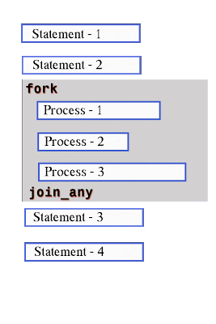

✅ fork...join_any in SystemVerilog
fork...join_any is used to start multiple processes in parallel, but unlike fork...join, it will continue execution as soon as any one of the processes finishes.

The remaining processes will still continue running in the background, but the simulation doesn’t wait for them.
üîπ Simple Example: fork...join_any
module fork_join_any_example;
initial begin
$display("Simulation started at time %0t", $time);
fork
#5 $display("Process 1 done at time %0t", $time);
#10 $display("Process 2 done at time %0t", $time);
join_any
$display("At least one process is done at time %0t", $time);
end
endmodule
üí° What Happens:
- Both processes start at time 0.
- Process 1 finishes at time 5 → execution moves forward.
- Even though Process 2 is still running, the next line is executed at time 5.
üîπ Nested Example: fork...join_any
module nested_fork_join_any;
initial begin
$display("Simulation started at time %0t", $time);
fork
begin
#15 $display("Outer Task 1 done at %0t", $time);
end
fork
#3 $display("Inner Task A done at %0t", $time);
#8 $display("Inner Task B done at %0t", $time);
join_any
join_any
$display("At least one task in outer or inner fork is done at %0t", $time);
end
endmodule
üí° What Happens:
- Inner tasks start together → Task A finishes at time 3.
- Because it's
join_any, simulation moves forward as soon as that one finishes, even though the other tasks are still running.
üîπ Real-Life Analogy: Taxi Waiting for Passengers üöï
Imagine you're a taxi driver waiting to pick up passengers from three locations:
- üè¢ Passenger A finishes work in 10 minutes
- üè´ Passenger B finishes class in 5 minutes
- üè• Passenger C finishes appointment in 15 minutes
You use fork...join_any when you say:
“As soon as any one of you is ready, I’m leaving. The others can take another cab.”
All passengers are notified at the same time. You leave as soon as one is ready.
Others are still doing their thing, but you don’t wait.
That’s what fork...join_any does—parallel start, continue when any finishes.